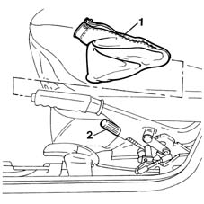
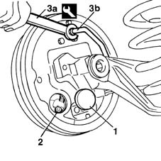
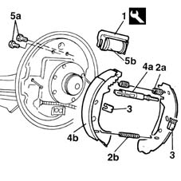

3320B20 Rear brake shoe CYLINDER (one) left or right - Replace.
- Path
- Procedures > 33 BRAKING SYSTEM > 3320 DRUM BRAKES > 3320B REAR DRUM BRAKES > 3320B20 Rear brake shoe CYLINDER (one) left or right - Replace.
- Kind
- repair procedure (removal / refitting; the operation number is the code)
- Applies to
- all engines; all production periods
- Interactive page
- https://sloeber94.github.io/elrnDB-fMltpl/en/#/2891595
Applies to: all engines; all production periods
 Removing
Removing
 Refitting
Refitting4450B11 WHEEL (one) rear - R.R.
3320B30 lh or rh rear brake drum (one) r r
Bleed the braking system working on the rear drum only referring to op. 3330A18 front or rear hydraulic brake system - bleed
1. Working from inside the vehicle, remove the protective boot (1a) for the handbrake lever.
2. Loosen the adjustment nut for the handbrake cable.

Applies to: all engines; all production periods
1. Remove the protective cover.
2. Disconnect the handbrake cable from the drum.
3. Using the spanner (3a), disconnect the rigid connector (3b) for the rear brake pipe.
 | Name | Country |
|---|---|---|
3a | Box wrench for brake fittings | 1.856.132.000 |

Applies to: all engines; all production periods
1. Position the tool (1a) on the shoe cylinder (1b).
| Name | Country |
|---|---|---|
1a | Bracket | 1.872.257.000 |
2. Using special pliers, remove the shoe return springs.
| Name | Country |
|---|---|---|
- | Pliers | 1.881.136.000 |
3. Remove the rear brake shoe return springs.
4. Remove the clearance recovery device (4a) together with the two rear brake shoes (4b).
5. Undo the fixing bolts (5a) and remove the shoe cylinder (5b).

Applies to: all engines; all production periods
Refitting
RemovingPosition the special tool on the new shoe cylinder.
| Name | Country |
|---|---|---|
- | Bracket | 1.872.257.000 |
Tighten the shoe cylinder fixing bolts to torque.
 | Fastening | Component | Ø | Value (daNm) |
|---|---|---|---|---|
- | Bolt | REAR BRAKE DRUM CYLINDER | M6 | 0.8 |
Position the clearance recovery device together with the rear brake shoes.
Position the rear brake shoe retaining springs.
Position the shoe return springs.
Remove the cylinder retaining tool.
| Name | Country |
|---|---|---|
- | Bracket | 1.872.257.000 |
Using a special spanner, tighten the rigid connector for the rear brake pipe.
| Name | Country |
|---|---|---|
- | Box wrench for brake fittings | 1.856.132.000 |
Connect the handbrake cable in the housing in the drum.
Position the protective cover.
3380A04 handbrake - check travel
3330A18 front or rear hydraulic brake system - bleed
Topics linked from this page (4)
- 3320B30 lh or rh rear brake drum (one) r r
- 3330A18 front or rear hydraulic brake system - bleed
- 3380A04 handbrake - check travel
- 4450B11 WHEEL (one) rear - R.R.